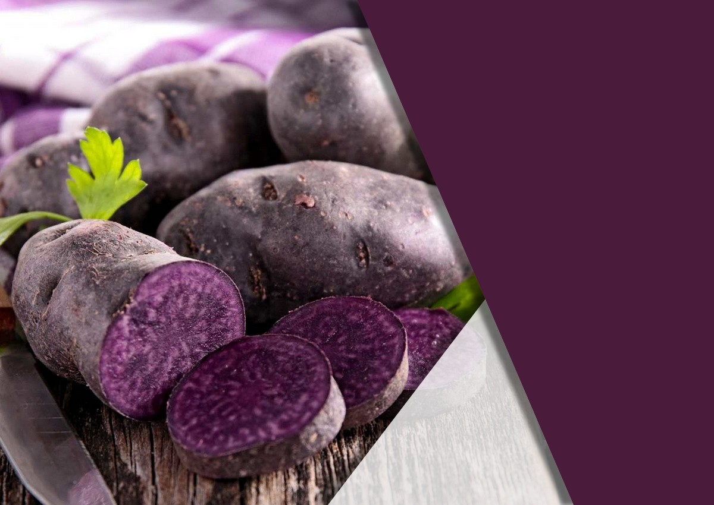

Parcours Avenir
Devenir purée de
pommes de terre
Vitelotte
Barack Afreet
3ème 9
Collège Beurnonville

Sommaire
- Introduction : motivations
- Problématique
- Je réinvestis mes connaissances
- Mon parcours d'études
- Mon stage en entreprise
- Mes qualités pour exercer ce métier
- Conclusion
1Pourquoi ai-je choisi ce parcours ?
Histoire
Les origines de la pomme de terre
Sciences Physiques
Projet Papas en Martes
SVT
L'apport nutritionnel : la Vitelotte
Mathématiques
Calcul du nombre de pommes de terre Vitelotte nécessaire pour conserver la couleur
2Comment devenir purée de pommes de terre Vitelotte ?
3Pour atteindre mon objectif
SVT
je dois posséder des anthocyanines
Histoire - Géographie
Les zones de culture de la Vitelotte et sa production mondiale
Latin
Les déclinaisons de Solanum tuberosum
Technologie
Fabrication d'un épluche patate
EPS
Les activités physiques indispensables pour garder la forme (de patate)
4Études envisagées

Bac Pro Anthocyane au Lycée Patatas de Troyes
BTS purée de pommes de terre au lycée agricole de la Patate Douce
Licence de Vitelotage à l'Université Presse Purée de Reims

Master et doctorat de purée Vitelotte à l'Université du Tubercule Violet
5Mon stage dans une usine de fabrication de chips
Ce que j'ai appris au sein de l'entreprise « Chip & dale »

6Les essentiels au métier
Obtenir de bons résultats dans les matières scientifiques
Avoir les qualités requises d'une bonne pomme de terre
Ne pas avoir peur des métamorphoses
Et, bien sûr... avoir la frite !
7Conclusion
Merci pour votre attention